un récit structuré en plusieurs pages
Objectifs de la présentation
Gemini, un atelier de production pour l’enseignant
Cette présentation montre comment un enseignant peut utiliser Gemini pour produire des ressources pédagogiques.
Nous nous intéresserons à cinq fonctionnalités :
- Storybook, pour créer un récit illustré
- les Gems, pour conserver et réutiliser un scénario pédagogique
- les images, pour illustrer un texte ou expliquer une notion
- Canvas, pour produire des quiz et des activités interactives
- Lyria, pour générer une ressource musicale
L’objectif n’est pas de présenter toutes les possibilités de Gemini, mais quelques usages concrets et reproductibles.
Gemini, un atelier de production pour l’enseignant
Une IA utilisée par l’enseignant
Dans les exemples proposés, c’est l’enseignant qui utilise Gemini et
- définit l’objectif pédagogique
- rédige la consigne
- sélectionne les documents de référence
- examine la production
- demande les modifications nécessaires
- choisit la forme de diffusion
Les élèves reçoivent ensuite une ressource finalisée.
Ils ne sont pas obligés de disposer d’un compte Gemini ni de dialoguer avec une IA.
Gemini, un atelier de production pour l’enseignant
Un même contenu, plusieurs supports
À partir d’un même sujet, Gemini peut aider l’enseignant à produire :
- une histoire illustrée
- un quiz de compréhension
- un jeu de vocabulaire
- une musique d’accompagnement
- une Gem permettant de renouveler les activités
- une illustration ou une infographie
Le contenu pédagogique reste le même, mais sa forme varie selon l’objectif et les conditions d’utilisation.
L’enseignant conçoit, Gemini assiste, l’élève utilise la ressource produite.
Gemini, un atelier de production pour l’enseignant
Ce que permet Education Fundamentals
- Modèles Rapide, Raisonnement et Pro
- Accès à Storybook, Canvas et aux Gems
- Jusqu’à 20 images par jour
- Jusqu’à 10 morceaux courts et 5 morceaux complets par jour
- Jusqu’à 5 recherches approfondies par mois
- Jusqu’à 20 présentations par jour
- Pas de génération vidéo
- Pas d’accès à Gemini Spark avec un compte scolaire
Gemini, un atelier de production pour l’enseignant
Limites et confidentialité
- Limites variables selon le modèle, la complexité des demandes et les fichiers importés
- Accès gratuit moins prioritaire en période de forte utilisation
- Consultation des quotas dans Paramètres → Limites d’utilisation
- Conversations et fichiers ni examinés par des réviseurs humains ni utilisés pour améliorer les modèles
- Historique conservé 18 mois par défaut et géré par l’administrateur
- Storybook, Lyria et certaines fonctions avancées de Canvas réservés aux comptes déclarés 18 ans ou plus
Storybook · Créer un récit illustré
Qu’est-ce que Storybook ?
Storybook, appelé Histoire illustrée en français, est une Gem créée par Google.
À partir d’une consigne, Gemini produit :
une illustration pour chaque étape
une lecture audio de l’histoire
un document que l’enseignant peut ensuite imprimer ou enregistrer
Storybook · Créer un récit illustré
Accéder à Histoire illustrée
- 01
Se rendre sur gemini.google.com
- 02
Ouvrir la barre latérale
- 03
Dans la rubrique Gems, cliquer sur Découvrir les Gems
- 04
Sélectionner Histoire illustrée
- 05
Saisir votre consigne dans la zone de dialogue
Prérequis : cette fonction est actuellement réservée aux utilisateurs de 18 ans ou plus.
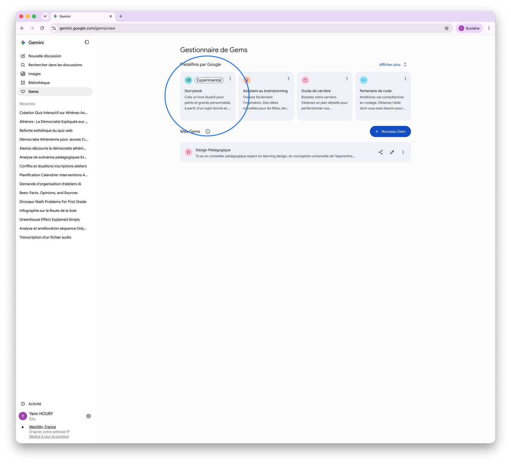
Storybook · Créer un récit illustré
Rédiger une consigne efficace
Une bonne consigne précise cinq éléments :
- 01
Le sujet : ce que l’histoire doit raconter
- 02
Le public : âge ou niveau scolaire
- 03
L’objectif pédagogique : notion à comprendre ou compétence à travailler
- 04
Les contraintes : vocabulaire, longueur, personnages ou structure
- 05
L’activité finale : questions, débat, résumé ou production écrite
Exemple
Crée une histoire illustrée pour des élèves de 11 ans. Un jeune citoyen découvre le fonctionnement de la démocratie à Athènes au Ve siècle avant notre ère. Explique simplement les mots « citoyen », « assemblée » et « démocratie ». Évite les anachronismes et termine par trois questions de compréhension.
Il est également possible d’ajouter des images ou des documents pour orienter la production.
Storybook · Créer un récit illustré
Vérifier et améliorer le résultat
La première version constitue un brouillon qu'il faut relire avant toute utilisation.
Points à contrôler
- exactitude des informations
- niveau de langue
- cohérence du récit
- correspondance entre texte et illustrations
- présence d’anachronismes ou de stéréotypes
- conformité avec l’objectif pédagogique
Les modifications se demandent dans la conversation :
Simplifie le vocabulaire des pages 3 et 4.
Remplace le dénouement par une situation qui invite au débat.
Génère une nouvelle version adaptée à des lecteurs plus fragiles.
Gemini recrée alors une version du livre tenant compte des nouvelles consignes.
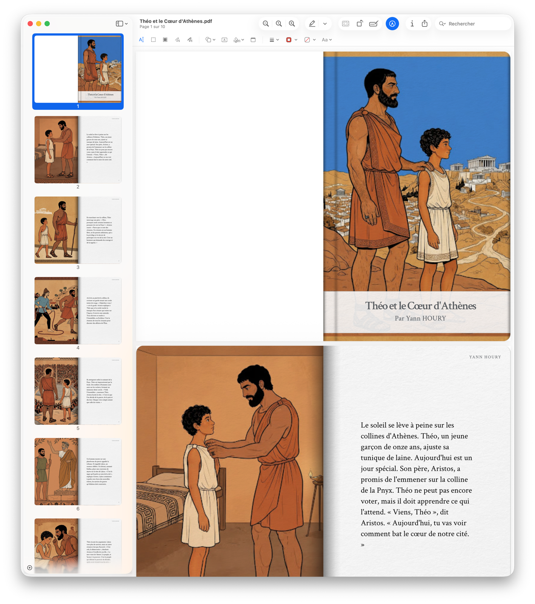
Storybook · Créer un récit illustré
Quelques applications pédagogiques
Lettres et langues
- illustrer un conte ou un mythe
- réemployer un lexique imposé
- créer une amorce pour une production écrite
Histoire et géographie
- raconter un événement du point de vue d’un témoin fictif
- présenter une époque ou une civilisation
- repérer les différences entre fiction et réalité historique
Sciences
- mettre en récit un phénomène naturel
- raconter le parcours d’une goutte d’eau ou d’un aliment
- expliquer les étapes d’une expérience
Mathématiques
- contextualiser un problème
- construire une enquête nécessitant plusieurs calculs
- faire repérer des informations utiles dans un récit
Storybook · Créer un récit illustré
Télécharger et utiliser l’histoire en classe
- 01
Ouvrir l’histoire illustrée
- 02
Cliquer sur Télécharger en haut du livre
- 03
Enregistrer le document sur l’ordinateur
- 04
Déposer le fichier sur Teams ou OneNote
Le Storybook peut ensuite être :
- projeté et lu collectivement
- imprimé
- proposé comme lecture autonome
- accompagné d’un questionnaire
- utilisé comme support d’expression orale
- analysé, corrigé ou prolongé par les élèves
La lecture audio reste accessible avec le bouton Écouter, mais elle n’est pas intégrée au fichier téléchargé.
Avec un compte scolaire, la création d’un lien public peut être indisponible, notamment dans l’application mobile, ou désactivée par l’administrateur. De plus, il s’agit d’un lien public, et non d’un partage limité à la classe. Pour notre contexte, le PDF est donc préférable. Aide officielle sur Storybook
Gems · Créer ses assistants pédagogiques
Qu’est-ce qu’une Gem ?
Une Gem est une version personnalisée de Gemini, configurée pour accomplir un type de tâche précis.
Elle peut mémoriser :
- un rôle
- une méthode de travail
- des consignes permanentes
- un format de réponse
- des documents de référence
On n’a donc plus besoin de répéter ses exigences à chaque nouvelle conversation.
Gems · Créer ses assistants pédagogiques
Gem prédéfinie ou Gem personnalisée
Gemini propose deux catégories de Gems :
les Gems prédéfinies
créées par Google, comme Storybook
les Gems personnalisées
créées par l’utilisateur pour répondre à ses propres besoins
Exemples de Gems personnalisées :
- créateur de fiches d’exercices
- assistant de différenciation
- générateur de quiz
- concepteur d’activités interactives
- relecteur utilisant une grille d’évaluation
Gems · Créer ses assistants pédagogiques
Créer une Gem
- 01
Accéder à gemini.google.com
- 02
Ouvrir la barre latérale
- 03
Cliquer sur Gems
- 04
Cliquer sur Nouveau Gem
- 05
Donner un nom à l’assistant
- 06
Rédiger ses instructions
- 07
Ajouter éventuellement des fichiers dans la rubrique Connaissances
- 08
Tester la Gem dans la zone d’aperçu
- 09
Cliquer sur Enregistrer
Gems · Créer ses assistants pédagogiques
Rédiger les instructions
Google recommande de préciser quatre éléments :
- 01
Persona : quel rôle la Gem doit-elle jouer ?
- 02
Tâche : que doit-elle produire ?
- 03
Contexte : pour quel public et dans quel cadre ?
- 04
Format : comment présenter le résultat ?
Il est également utile d’indiquer :
- ce que la Gem doit toujours faire
- ce qu’elle ne doit jamais faire
- les vérifications qu’elle doit effectuer
- les informations qu’elle doit demander si la consigne est incomplète
Gems · Créer ses assistants pédagogiques
Exemple : « Une énigme par jour »
Cette Gem propose une courte énigme sur les Fables de La Fontaine, utilisable comme ticket de sortie.
Les élèves peuvent être invités à :
- reconnaître une fable
- identifier un personnage
- expliquer un mot ou une expression
- retrouver une moralité
- analyser un vers
- interpréter une illustration
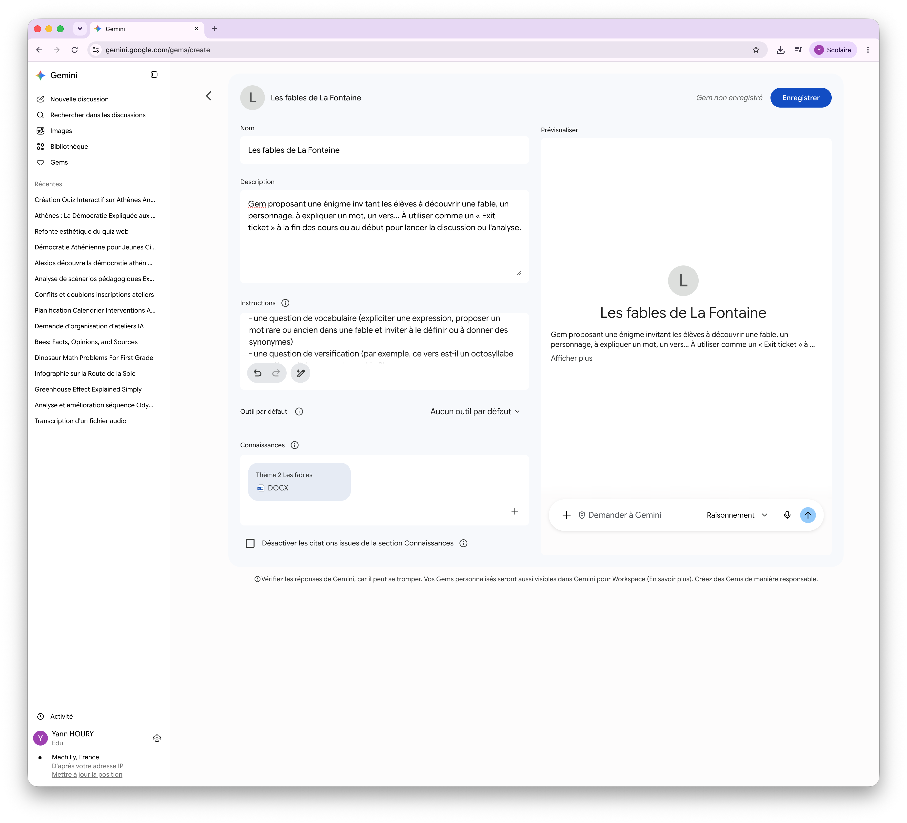
Gems · Créer ses assistants pédagogiques
Cadrer le déroulement
Deux consignes suffisent à rendre une Gem réutilisable toute l’année :
Ouvrir par un choix
La Gem commence par demander un paramètre qui oriente la suite. Dans « Une énigme par jour », c’est un thème à choisir parmi six.
Imposer la variété
La Gem doit alterner les formes de questions et changer de support à chaque fois : résumé, portrait, moralité, vers, illustration…
Ces deux principes valent quelle que soit la discipline. Seules changent la liste des choix proposés en ouverture et les formes de questions attendues.
Gems · Créer ses assistants pédagogiques
Ajouter des documents de référence
Dans la rubrique Connaissances, l’enseignant peut importer :
- les textes des fables étudiées
- une liste des fables classées par thème
- un lexique des mots rares
- des rappels sur la versification
- la progression de la séquence
La Gem doit utiliser prioritairement ces documents.
Gems · Créer ses assistants pédagogiques
Instructions de la Gem
Tu proposes une énigme invitant les élèves à découvrir une fable, un personnage, à expliquer un mot, un vers…
1. Tu demandes à l'utilisateur quel thème il veut choisir. Il y en a six :
- Le loup glouton
- Le voyage et ses périls
- Des fables pour rire
- L'homme et l'animal
- Trompeurs et trompés
- La satire
2. Propose une activité dont l'objectif est de reconnaître une fable. Ce peut être :
- un bref résumé invitant à reconnaître la fable (fais en sorte que lorsque tu mentionnes les personnages, l’identification de la fable ne soit pas rendue trop facile)
- une question invitant à reconnaître un personnage (propose une description des traits de caractère d’un personnage animalisé et invite à retrouver la fable correspondante)
- une expression populaire issue d’une fable que l'on doit associer à l’histoire correspondante
- une moralité dont il faut retrouver la fable dont elle provient
- une question de vocabulaire (expliciter une expression, proposer un mot rare ou ancien dans une fable et inviter à le définir ou à donner des synonymes)
- une question de versification (par exemple, ce vers est-il un octosyllabe ou un décasyllabe ou un alexandrin ?)
- une illustration réalisée dans le style de Pixar et invitant à reconnaître la fable interprétée
Assure-toi de proposer une grande variété de questions (résumé, personnage, moralité, versification, illustration...) et d'utiliser des fables différentes à chaque fois.
Gems · Créer ses assistants pédagogiques
Utilisation en classe
Plusieurs usages sont possibles :
- projeter l’énigme et recueillir les réponses oralement
- copier le contenu produit par la Gem dans Microsoft Forms
- demander à Canvas de transformer l’énigme en page web interactive
- imprimer l’énigme pour en faire un ticket de sortie individuel
Images · Produire une ressource visuelle
Qu’est-ce que la création d’images ?
À partir d’une consigne, Gemini produit une image directement dans la conversation.
une illustration destinée à accompagner un texte
un schéma ou une infographie expliquant une notion
plusieurs variantes d’une même image
la modification d’une image existante qu’il a fournie
Avec Education Fundamentals, la production est limitée à 20 images par jour.
Images · Produire une ressource visuelle
Accéder à la création d’images
- 01
Se rendre sur gemini.google.com
- 02
Cliquer sur le bouton + à gauche de la zone de dialogue
- 03
Choisir Créer une image dans la liste des outils
- 04
Décrire l’image souhaitée
Une image peut aussi être demandée à l’intérieur d’une autre production : c’est ce que fait Storybook pour illustrer chaque page du récit.
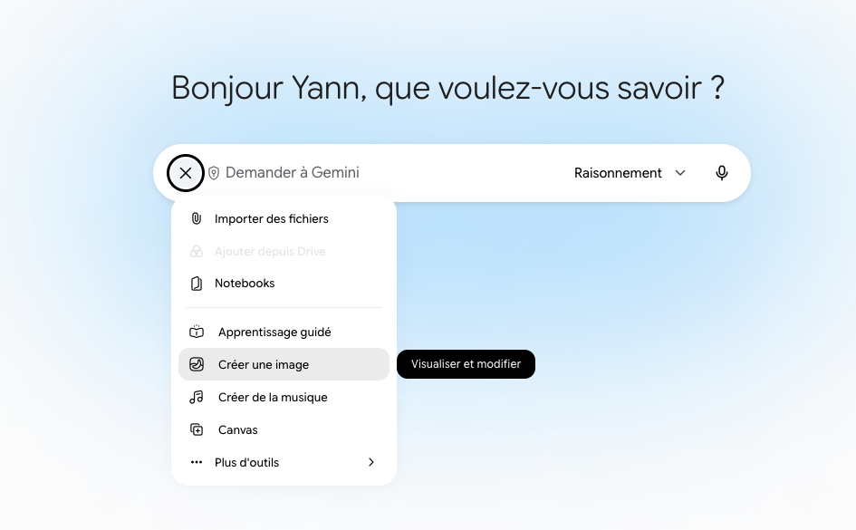
Images · Produire une ressource visuelle
L’atelier « Créer des images »
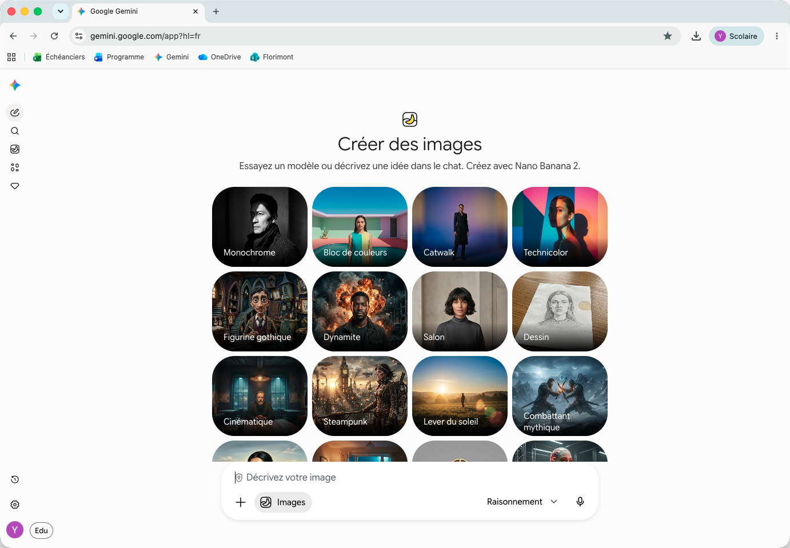
- une zone Décrivez votre image équivalente à la conversation
- une galerie de styles prédéfinis : dessin, monochrome, cinématique, steampunk…
- un style se choisit d’un clic, puis se complète par une consigne écrite
- l’image produite peut ensuite être modifiée par de nouvelles demandes
Cette interface évolue rapidement et reste signalée comme bêta : la disposition peut différer de celle présentée ici.
Images · Produire une ressource visuelle
Illustrer ou expliquer
Deux usages très différents, qui n’appellent pas les mêmes exigences.
Image illustrative
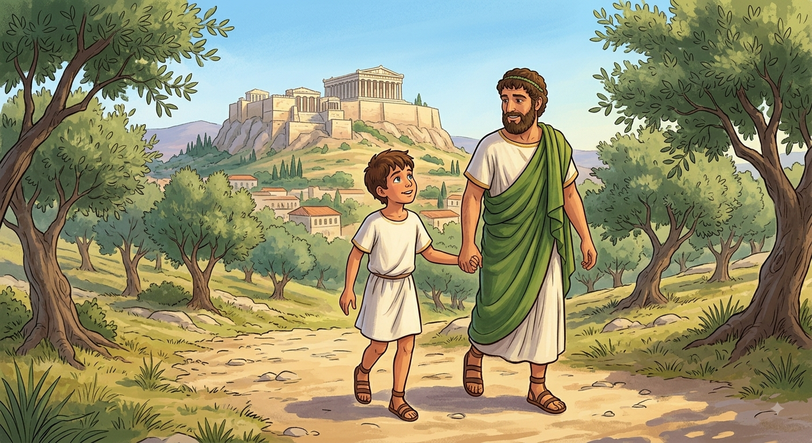
Elle accompagne le récit et installe une atmosphère. Elle ne porte aucune information que l’élève devra retenir.
Image explicative
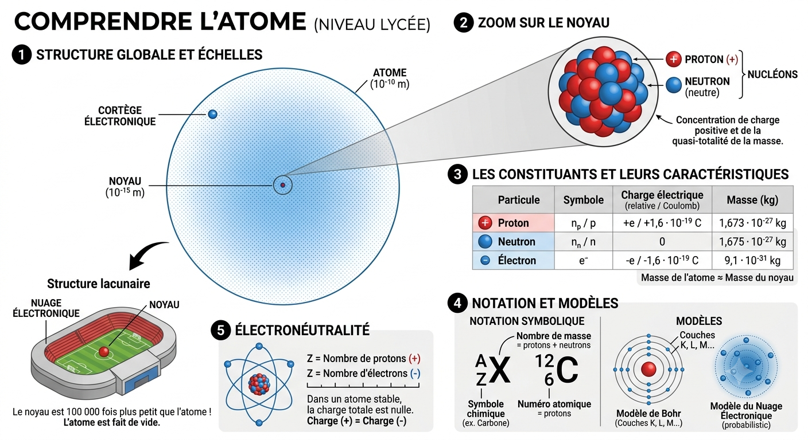
Elle porte elle-même le contenu : schéma, infographie, frise. Chaque mot inscrit devient un élément de cours.
Une illustration se juge sur sa vraisemblance ; une infographie se vérifie mot par mot.
Images · Produire une ressource visuelle
Rédiger une consigne visuelle
Une consigne visuelle peut préciser cinq éléments :
- 01
Le sujet : ce que l’image doit montrer
- 02
Le type d’image : illustration, schéma, infographie ou frise
- 03
Le style : dessin, aquarelle, gravure ou photographie
- 04
Le format : horizontal pour une projection, vertical pour une impression
- 05
Le texte : les mots à faire figurer, ou l’absence totale de texte
Exemple — une seule phrase peut suffire
Crée l’illustration permettant de comprendre ce qu’est un atome pour des élèves de lycée.
Cette consigne nomme l’objectif et le public : elle a produit l’infographie précédente. Les cinq éléments servent surtout à reprendre la main lorsque le résultat ne convient pas.
Images · Produire une ressource visuelle
Vérifier et améliorer l’image
La qualité varie fortement d’une image à l’autre : celle-ci, sur la Boulè, multiplie les légendes fautives.
Points à contrôler
- exactitude de ce qui est représenté
- orthographe du texte inscrit dans l’image
- légendes tronquées ou inventées
- anachronismes et stéréotypes
- cohérence avec le texte accompagné
- lisibilité une fois projetée ou imprimée
Les corrections se demandent dans la conversation :
Corrige les fautes dans les légendes.
Reprends le schéma avec quatre étapes seulement.
Refais l’image sans aucun texte.
Le texte inscrit dans une image reste le point faible. Pour un document remis aux élèves, une image sans texte, légendée ensuite par l’enseignant, est souvent plus sûre.
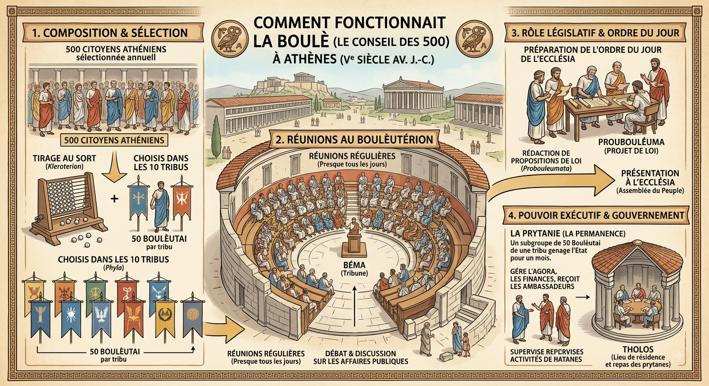
Images · Produire une ressource visuelle
Retoucher l’image sans quitter Gemini
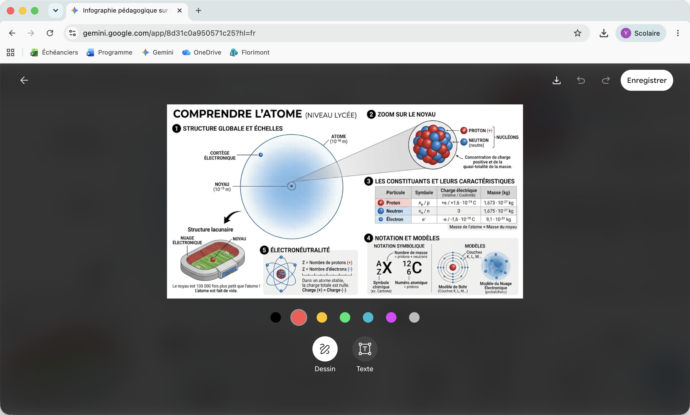
Un éditeur permet d’intervenir directement sur l’image produite.
- Dessin : entourer, souligner, relier deux éléments
- Texte : ajouter ou corriger une légende
- une palette de couleurs pour distinguer les annotations
- Annuler et Rétablir pour revenir en arrière
- Enregistrer ou télécharger la version annotée
L’éditeur corrige la forme : une légende fautive peut être réécrite à la main. Une erreur de fond se corrige en redemandant l’image dans la conversation.
Images · Produire une ressource visuelle
Quelques applications pédagogiques
Lettres et langues
- illustrer une scène à décrire à l’oral
- fournir une amorce pour une production écrite
- représenter une expression imagée
Histoire et géographie
- représenter un lieu ou une époque
- schématiser le fonctionnement d’une institution
- confronter l’image produite à une source authentique
Sciences
- schématiser un cycle ou un phénomène
- illustrer les étapes d’une expérience
- produire une planche à légender par les élèves
Éducation à l’image
- comparer plusieurs styles pour un même sujet
- faire repérer les erreurs d’une infographie générée
- travailler la notion d’image produite par une IA
Les images produites par Gemini comportent un filigrane numérique invisible SynthID, qui permet d’identifier leur origine.
Canvas · Transformer une histoire en activité pédagogique
Qu’est-ce que Canvas ?
Canvas est un espace de création intégré à Gemini.
Il permet de transformer une consigne ou un document en :
- texte structuré
- quiz
- diaporama
- page web
- application interactive
Nous allons reprendre l’histoire de Théo et le Cœur d’Athènes pour produire deux activités :
- 01un quiz de compréhension
- 02un jeu de vocabulaire
Canvas · Transformer une histoire en activité pédagogique
Importer l’histoire dans Canvas
- 01
Télécharger le Storybook
- 02
Ouvrir une nouvelle conversation dans Gemini
- 03
Cliquer sur Importer des fichiers et outils
- 04
Ajouter le fichier de l’histoire
- 05
Sélectionner Canvas
- 06
Décrire l’activité à produire
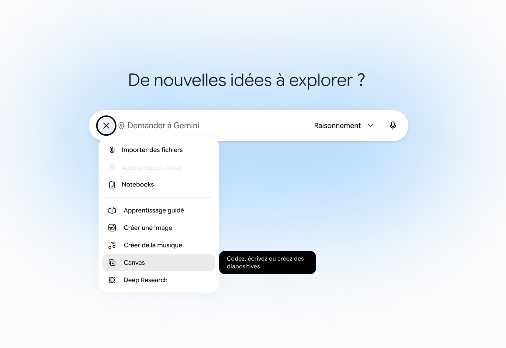
Le document importé fournit à Gemini le contenu de référence. Il faut toutefois préciser que les questions doivent être fondées exclusivement sur ce document.
Canvas · Transformer une histoire en activité pédagogique
Créer un quiz interactif
Exemple de prompt
À partir de l’histoire jointe, crée une application web de quiz interactif destiné à des élèves de 11 ans.
Propose dix questions : sept QCM et trois questions « vrai ou faux ». Interroge les élèves sur le récit et sur les notions de citoyen, d’assemblée, de démocratie, la Boulé et de Pnyx.
Affiche une question à la fois, donne une courte explication après chaque réponse et présente le score final. Ajoute un bouton permettant de recommencer. Utilise uniquement les informations du document fourni.
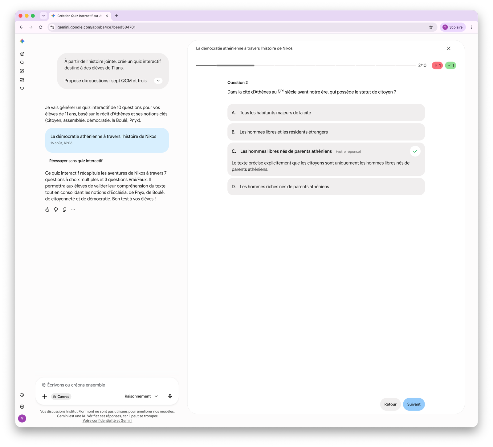
Canvas · Transformer une histoire en activité pédagogique
Tester et améliorer le quiz
Avant de diffuser l’activité, comme pour le storybook, vérifiez tout :
- l’exactitude des réponses
- la clarté des consignes
- la pertinence des distracteurs
- le fonctionnement des boutons
- le calcul du score
- la lisibilité sur différents écrans
Canvas · Transformer une histoire en activité pédagogique
Créer un jeu de vocabulaire
La même histoire peut être transformée en jeu du mot mystère, inspiré du pendu.
Exemple de prompt
À partir du document joint, crée une web app qui propose un jeu du mot mystère pour des élèves de 11 ans.
Utilise les mots « citoyen », « assemblée », « démocratie », « Athènes » et « Pnyx ». Pour chaque mot, affiche une définition ou un indice tiré de l’histoire. L’élève sélectionne les lettres proposées à l’écran.
Affiche le nombre d’erreurs restantes sans représenter de personnage pendu. Félicite l’élève lorsqu’il trouve le mot et propose ensuite un nouveau mot. Ajoute un bouton pour recommencer. L’activité doit fonctionner sans demander de données personnelles.
Canvas · Transformer une histoire en activité pédagogique
Variante : créer des mots croisés
Le même corpus peut également servir à produire une grille de mots croisés.
Exemple de prompt
Crée une petite grille de mots croisés à partir du vocabulaire de l’histoire. Utilise six à huit mots, notamment « citoyen », « Pnyx », « assemblée » et « démocratie ».
Affiche les définitions à côté de la grille. Permets de saisir les lettres directement dans les cases. Ajoute un bouton « Vérifier » qui signale les erreurs sans révéler immédiatement toutes les réponses, puis un bouton « Recommencer ».
Canvas · Transformer une histoire en activité pédagogique
Utiliser l’activité en classe
Avec un compte Workspace for Education, le quiz ou l’application ne propose pas nécessairement d’option de partage ou de téléchargement.
Pour utiliser l’activité en dehors de Gemini :
- 01
Ouvrir la vue Code dans Canvas
- 02
Copier le code HTML généré
- 03
Ouvrir Visual Studio Code
- 04
Créer un fichier nommé
index.html - 05
Coller le code, puis enregistrer le fichier
- 06
Ouvrir
index.htmldans un navigateur pour tester l’activité
Le fichier peut ensuite être déposé sur un serveur ou dans l’espace web de l’établissement. Les élèves accèdent alors à une page classique et n’ont pas besoin d’utiliser Gemini.
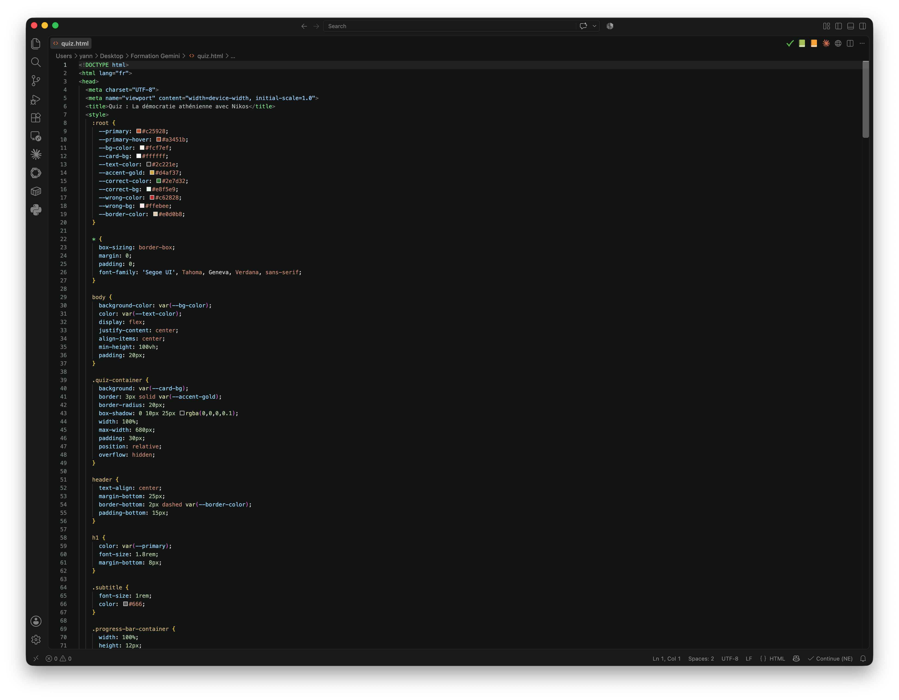
Lyria · Produire une ressource musicale
Qu’est-ce que Lyria ?
Lyria est le générateur de musique intégré à Gemini. À partir d’une consigne, il peut produire :
une musique instrumentale
une chanson avec des paroles
une ambiance sonore
un morceau accompagné d’un visuel de couverture
Lyria · Produire une ressource musicale
Accéder à la création musicale
- 01
Ouvrir gemini.google.com
- 02
Cliquer sur le bouton + dans la zone de saisie
- 03
Choisir Créer de la musique
- 04
Saisir une consigne décrivant le morceau
- 05
Lancer la génération, puis écouter le résultat
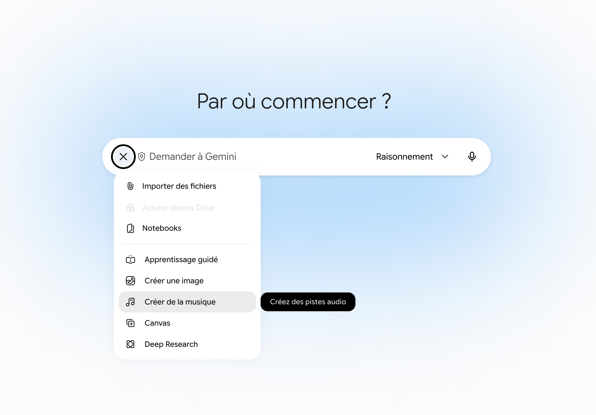
Il est possible d’ajouter une image ou une vidéo pour préciser l’univers visuel et l’atmosphère recherchée.
Lyria · Produire une ressource musicale
Rédiger une consigne musicale
Une consigne efficace précise :
- 01
La fonction du morceau : introduction, ambiance, mémorisation…
- 02
La durée : par exemple 30 secondes
- 03
Le genre ou l’atmosphère : solennelle, joyeuse, inquiétante…
- 04
Les instruments souhaités
- 05
Le rythme et le tempo
- 06
La présence ou l’absence de paroles
- 07
Le public et le contexte pédagogique
Pour un premier essai, un morceau court et instrumental est plus facile à contrôler.
Lyria · Produire une ressource musicale
Prolonger l’histoire de Théo
La musique peut accompagner la lecture de Théo et le Cœur d’Athènes.
Exemple de prompt
Compose une courte pièce instrumentale de 30 secondes pour introduire la lecture d’une histoire située dans l’Athènes du Ve siècle avant notre ère.
Crée une atmosphère calme, solennelle et légèrement mystérieuse. Utilise principalement une lyre, une flûte et des percussions légères. N’ajoute ni paroles ni sonorités électroniques modernes.
Lyria · Produire une ressource musicale
Créer une chanson mnémotechnique
Lyria peut également transformer des notions du cours en chanson.
Exemple de prompt
Crée une chanson courte et entraînante pour des élèves de 11 ans. Les paroles doivent expliquer simplement les mots « citoyen », « assemblée » et « démocratie » dans l’Athènes antique.
Utilise un refrain facile à mémoriser et trois courts couplets. Évite les informations qui ne figurent pas dans le cours. Fais apparaître clairement que seuls certains habitants étaient citoyens.
Lyria · Produire une ressource musicale
Quelques applications pédagogiques
La musique générée peut servir à :
- créer une ambiance avant une lecture
- accompagner un récit ou une présentation
- produire un générique de podcast
- mémoriser une notion grâce à un refrain
- mettre un poème en musique
- comparer plusieurs interprétations sonores d’un même texte
- faire décrire une atmosphère ou exprimer des émotions
- interroger les représentations modernes d’une époque historique
Lyria · Produire une ressource musicale
Générer une nouvelle version
Si le premier résultat ne convient pas, l’enseignant peut préciser sa demande :
Ralentis le tempo et rends l’atmosphère plus solennelle
Réduis l’importance des percussions
Crée une version entièrement instrumentale
Simplifie le refrain et évite les répétitions inutiles
Génère une nouvelle version de 30 secondes
Lyria · Produire une ressource musicale
Télécharger et diffuser le morceau
Une fois le morceau vérifié :
- 01
Cliquer sur Télécharger en haut à droite du visuel
- 02
Choisir le format souhaité :
- MP3 pour le fichier audio
- MP4 pour la musique accompagnée de son visuel
- 03
Déposer le fichier sur Teams ou OneNote
- 04
L’intégrer éventuellement à un diaporama, une vidéo ou un podcast
Le téléchargement permet de diffuser la ressource sans demander aux élèves d’accéder à Gemini.
Chaque morceau contient un filigrane numérique indiquant qu’il a été généré par une IA.
Aide officielle sur la génération musicale · Fonctionnalités de Workspace for Education
Conclusion
Cinq outils, cinq productions
- Storybook transforme une consigne en récit illustré.
- Les Gems transforment des consignes récurrentes en assistant personnalisé.
- La création d’images transforme une notion en illustration ou en infographie.
- Canvas transforme un contenu en quiz ou en activité interactive.
- Lyria transforme une intention en ressource musicale.
Ces outils répondent à des besoins différents, mais suivent la même logique : partir d’un objectif pédagogique pour produire une ressource utilisable en classe.
Conclusion
Une même démarche
Quel que soit l’outil utilisé, le travail suit plusieurs étapes :
- 01
définir l’objectif
- 02
fournir le contexte et les documents
- 03
formuler une consigne précise
- 04
examiner la première proposition
- 05
corriger et adapter le résultat
- 06
exporter ou diffuser la ressource
La qualité de la production dépend autant de la consigne initiale que du travail de vérification.
Conclusion
L’enseignant reste l’auteur final
Gemini peut accélérer la création, proposer des variantes et faciliter la production de nouveaux supports.
L’enseignant reste responsable :
- des objectifs pédagogiques
- du choix des contenus
- de l’exactitude des informations
- de l’adaptation aux élèves
- de la forme finale de la ressource
- de ses conditions d’utilisation et de diffusion